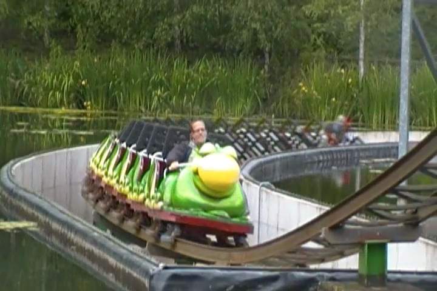
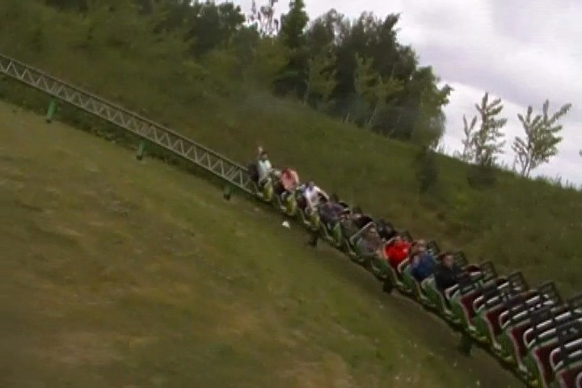
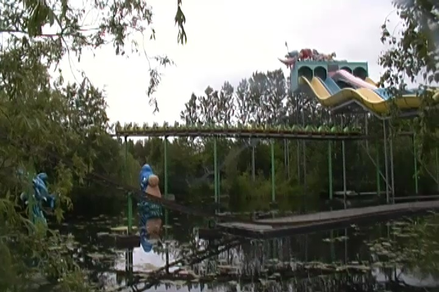

| |
Viktor Vandorm Review

We're here at Bon Bon Land to review their family coaster or is it a kiddy coaster. Viktor Vandorm. Yeah. This is one of those rides that really bends the rules. Is this ride a kiddy coaster or a family coaster. It's in that weird gray area where I'm not sure. Blurring the line between kiddy coaster and family coaster. We come across the looooooong trains, we pull down our lap bars, and away we go. We go up a tiny lifthill. And when I say tiny lifthill, I mean like kiddy coaster sized lifthill. I'm bigger than this lifthill. But because the station is about 20 ft above the ground, we're actually above the ground. We coast down this slight turn drop. We can't really tell because these trains are so long they screw up the acceleration and it almost feels like a powered coaster. We rise up a small hill and head down the big drop. And hey. It goes into a trench in the water. Makes sense considering Viktor Vandorm in English translates into Water Worm (That's so normal. You sure this worm doesn't have any bodily functions? This is Bon Bon Land after all). The drop is fun and the trench turn is fun. And it even gives us some laterals. We pop out of the trench and up a curved hill. But because of how long the train is, we don't really notice until we've already crested the hill. We go through some straight track and into this curved dip. Wee. Fun!!! We head up another curved hill, into another turn into some straight track. Riveting. But this of course, leads us into another big turn. No, it's actually a non banked helix as it takes us to the ground and gives us some speed. Cool. We head up a couple hills, head around a turn, leading straight into another helix. We go through some straight track, around a turn, and up a big hill. A lift hill perhaps. Yep. We're climbing back to the station. Well we go down a couple dips, and through the station and get a second round. YAY!!! Yeah. It's hard to say whether its a family coaster or a kiddy coaster. But it's a fun little ride. Feel free to take a ride. I don't consider it to be credit whoring.
4/10
Location: Bon Bon Land
Opened: 2009
Built by: Zeirer
Last Ridden: June 16, 2014
Viktor Vandorm Photos



Home
|